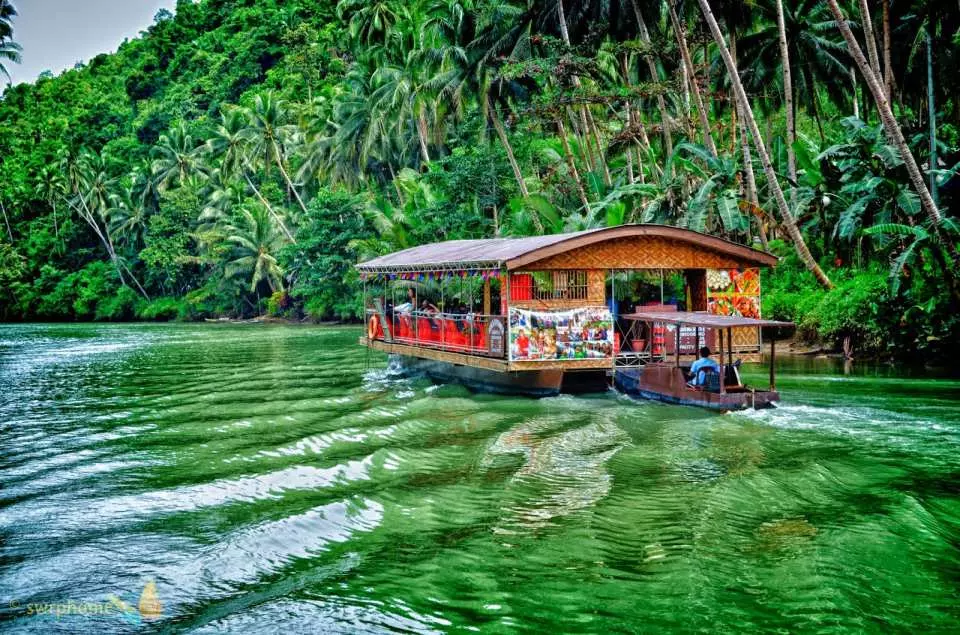
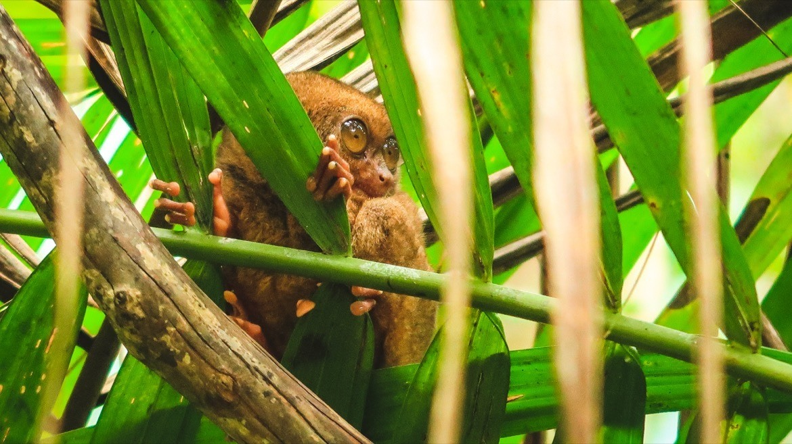

Loboc River cruise
The Loboc River, nestled in the heart of Bohol Island, Philippines, is a natural gem of unparalleled beauty.
Its emerald waters wind through a lush tropical landscape, flanked by towering limestone formations and vibrant greenery.
The river is a haven for travelers seeking serenity and natural wonders. A popular attraction is the leisurely river cruise,
where visitors can glide along its gentle currents, enjoying the soothing ambiance. Floating restaurants offer a unique dining
experience, combining local cuisine with stunning river views. The nearby Tarsier Conservation Area showcases the region's
biodiversity, home to the tiny and enchanting tarsier primates. The Loboc River is a must-visit destination for those seeking
tranquility and natural splendor in Bohol.
Tarsier sanctuary
The Tarsier Sanctuary in Bohol, Philippines, is a vital haven for the world's smallest primates, the tarsiers. Nestled within lush
forests and natural habitats, this sanctuary offers a unique opportunity to observe these enchanting creatures up close. Tarsiers, with
their large eyes and tiny frames, are known for their cuteness and unique features. Visitors can stroll through the sanctuary's well-
preserved environment and witness tarsiers leaping from tree to tree in their natural habitat. The sanctuary plays a crucial role in
tarsier conservation efforts, providing a safe space for research, education, and the protection of these endangered primates while
raising awareness about their conservation needs.
Suspension bridge
The Bohol Suspension Bridge is an engineering marvel and a notable attraction in the province of Bohol, Philippines. Stretching gracefully
over the serene Sipatan River, this 2nd longest hanging bridge in the Philippines offers a thrilling and picturesque experience. The bridge is
an impressive sight, with its sturdy cables and wooden planks suspended high above the water. As you walk across, you'll be treated to breathtaking
views of the surrounding lush greenery and the tranquil river below. The Bohol Suspension Bridge not only provides a thrilling adventure but also a
glimpse into the region's natural beauty and is a must-visit for those seeking a memorable experience in Bohol.

